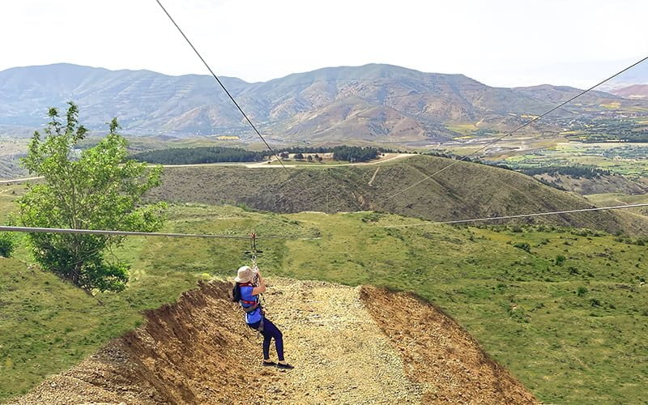
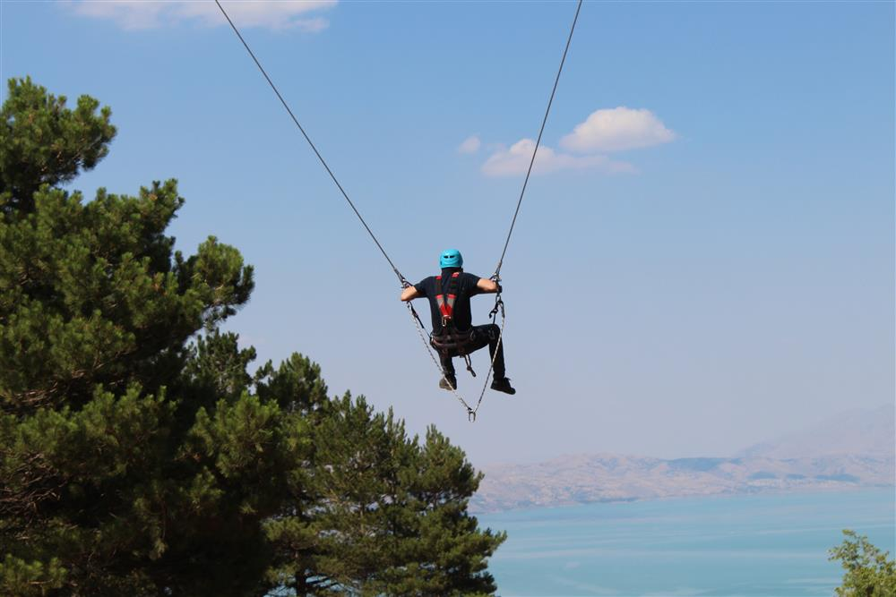
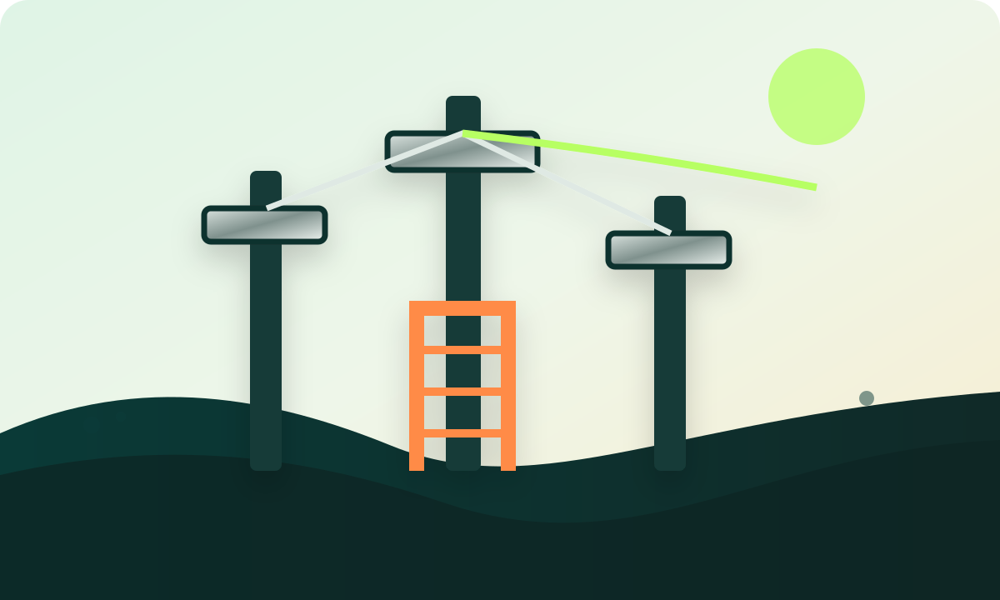
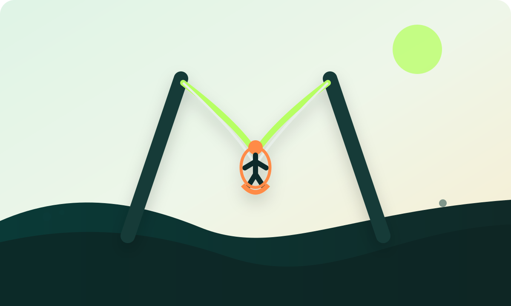
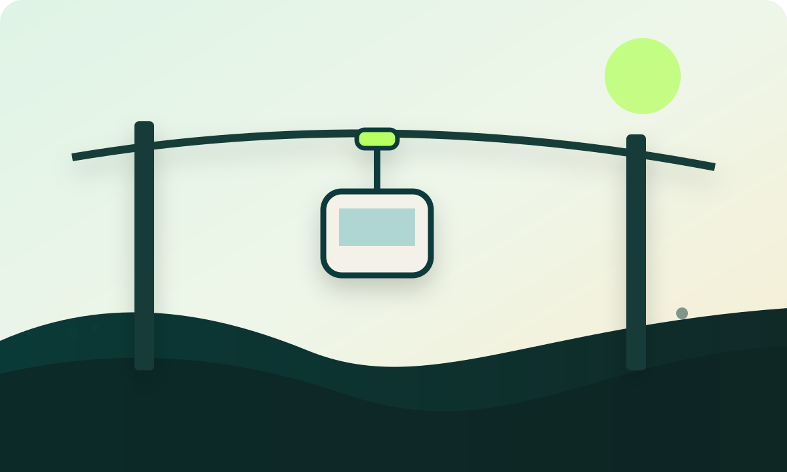
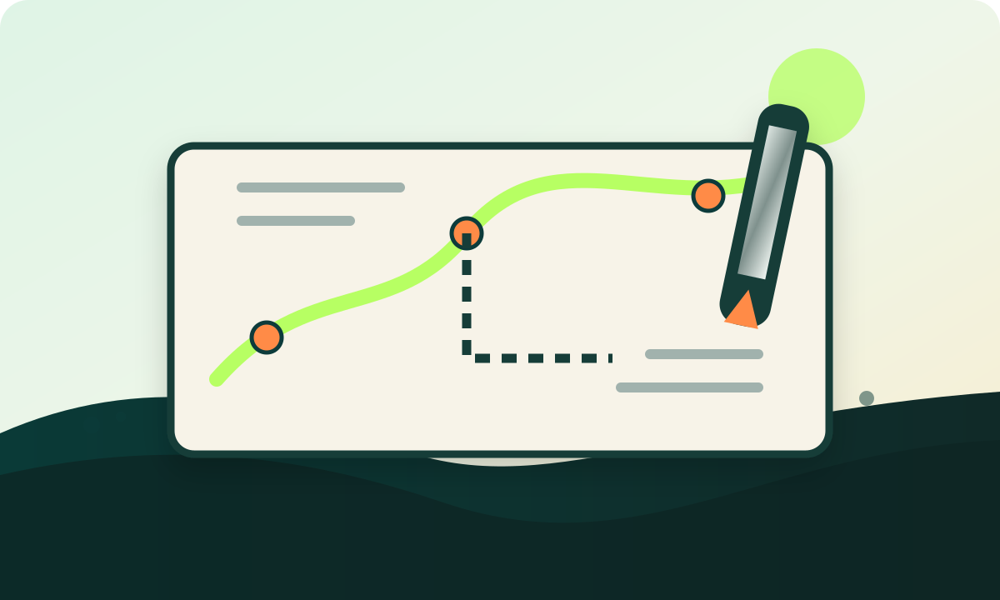

Keşif
Alan ölçüleri, eğim, zemin, hedef yaş grubu ve işletme beklentileri incelenir.
Skytek Teknoloji; zipline, zipcoaster, dev salıncak, ip parkuru, skatepark, teleferik ve özel macera parkı sistemleri için projelendirme, üretim, montaj ve işletmeye alma süreçlerini profesyonel şekilde yürütür.
Zipline / Zipcoaster / Dev Salıncak
Alanınıza, hedef kitlenize ve yatırım bütçenize göre ölçeklenebilir sistemler tasarlarız. Her kart kendi detay sayfasına gider.

Doğal arazi, vadi ve tesis geçişlerinde yüksekten süzülme deneyimi.
Detayları incele →Virajlı taşıyıcı hat üzerinde daha uzun ve akıcı bir sürüş deneyimi.
Detayları incele →
Yüksek kuleler arasında güçlü salınım ve adrenalin deneyimi.
Detayları incele →Denge, tırmanma ve geçiş etaplarından oluşan modüler macera parkuru.
Detayları incele →
Birden fazla aktiviteyi aynı taşıyıcı yapı üzerinde birleştiren kule sistemleri.
Detayları incele →Kaykay, scooter ve BMX için rampa ve akış odaklı spor alanları.
Detayları incele →
Kontrollü fırlatma hissi yaratan yüksek adrenalinli eğlence sistemi.
Detayları incele →
Tesis ve sosyal alanlarda manzaralı geçiş sağlayan kabinli hat sistemi.
Detayları incele →
Araziye, konsepte ve yatırım hedeflerine özel mühendislik çözümleri.
Detayları incele →Bir macera parkı yatırımında önemli olan sadece ilk günkü görünüm değildir. Ziyaretçi akışı, personel kullanımı, bakım erişimi, güvenlik kontrol noktaları ve alanın ticari sürdürülebilirliği birlikte düşünülmelidir.
Alan ölçüleri, eğim, zemin, hedef yaş grubu ve işletme beklentileri incelenir.
Aktivite rotası, kule konumları, akış ve ziyaretçi deneyimi profesyonel şekilde planlanır.
Projeye uygun taşıyıcı sistemler, platformlar, bağlantılar ve ekipmanlar hazırlanır.
Saha kurulumu, hat ayarları, güvenlik kontrolleri ve test süreçleri tamamlanır.
Farklı lokasyonlarda hayata geçirilen sistem ve uygulamalarımızı kategori bazında inceleyebilirsiniz.
Hazarbaba’nın doğal topoğrafyasında ziyaretçilere manzara eşliğinde yüksekten geçiş deneyimi sunan zipline uygulaması.
Proje detaylarını aç →Hazarbaba’nın yüksek manzara noktasında adrenalin ve seyir deneyimini bir araya getiren dev salıncak uygulaması.
Proje detaylarını aç →Doğal arazi yapısına uyumlu, virajlı rota hissi veren zipcoaster hattı. Ziyaretçi akışını güçlendiren, yüksek adrenalinli bir park deneyimi olarak kurgulandı.
Proje detaylarını aç →Zipline deneyimini daha dinamik bir güzergâh yapısıyla birleştiren zipcoaster uygulaması. Alanın eğlence kapasitesini artırmaya yönelik kompakt ve etkili bir çözüm.
Proje detaylarını aç →Sosyal yaşam alanı içinde ziyaretçi çekiciliğini artıran zipcoaster hattı. Park konseptine uygun şekilde rota, biniş ve iniş akışı dikkate alınarak planlandı.
Proje detaylarını aç →Yurt dışı uygulama örneklerinden biri olan zipcoaster projesi. Hedef kullanıcı deneyimi, taşıyıcı sistem ve işletme akışı bir arada değerlendirilerek tasarlandı.
Proje detaylarını aç →Arazinin potansiyelini öne çıkaran zipcoaster kurulumu. Rota hissi, güvenli biniş alanı ve işletme sürekliliği düşünülerek geliştirildi.
Proje detaylarını aç →Gölet ve doğal manzara etkisini adrenalinle birleştiren dev salıncak uygulaması. Fotoğraf etkisi yüksek, izleyici alanıyla birlikte güçlü bir deneyim noktası oluşturur.
Proje detaylarını aç →Yüksek adrenalin beklentisine uygun dev salıncak sistemi. Kule, ankraj ve operasyon senaryosu ziyaretçi güvenliği odağında ele alındı.
Proje detaylarını aç →Doğa içinde güçlü görsel etki oluşturan dev salıncak alanı. Biniş, salınım ve izleyici deneyimi birlikte planlandı.
Proje detaylarını aç →Belediye sosyal alanı için geliştirilen teleferik ve hat sistemi konsepti. Geçiş deneyimi, güvenli biniş/iniş noktaları ve tesis bütünlüğü göz önünde bulundurularak planlandı.
Proje detaylarını aç →Kastamonu Millet Bahçesi için uygulanan skatepark alanı. Kaykay, scooter ve BMX kullanımına uygun rampalar, geçişler ve saha yerleşimi birlikte planlanıp uygulandı.
Proje detaylarını aç →Uygulamadan önce konseptin daha net anlaşılması için hazırlanan dijital proje görselleri. 3D tasarım, rota ve yerleşim kararlarını destekler.
Proje detaylarını aç →Alanınızın lokasyonu, yaklaşık ölçüsü, düşündüğünüz aktivite türleri ve hedef yaş grubu ile beraber bize ulaşabilirsiniz.